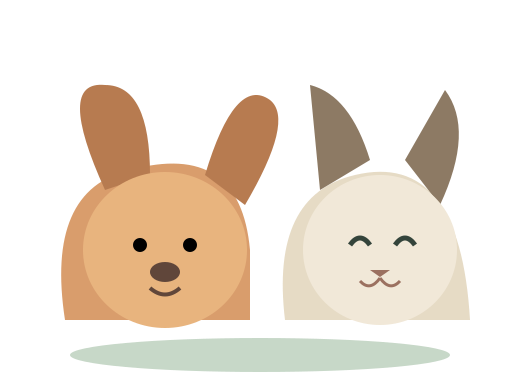

Kaip išsirinkti tinkamą maistą savo augintiniui?
Į ką atkreipti dėmesį renkantis pašarą: amžius, dydis, aktyvumas, sudėtis ir individualūs poreikiai.
Skaityti straipsnį →Aiškūs, praktiški patarimai apie šunų ir kačių mitybą, priežiūrą bei kasdienę gerovę.
Skaityti patarimus →● Atsakinga priežiūra prasideda nuo žinių
♡ Rūpestis kiekvieną dienąPasirinkite temą ir raskite naudingos informacijos savo augintiniui.
Į ką atkreipti dėmesį renkantis pašarą: amžius, dydis, aktyvumas, sudėtis ir individualūs poreikiai.
Skaityti straipsnį →Rūpinkimės augintiniais atsakingai – žingsnis po žingsnio.
Pet priežiūros gidas
Reklaminiai pasiūlymai
Žemiau pateikiamos reklaminės nuorodos į Aro Vet. Vaistinės prekes. Prieš įsigydami patikrinkite aktualią kainą, dydį ir prieinamumą parduotuvėje.
Apsauginė priemonė, kuri gali padėti apriboti augintinio galimybę pasiekti tam tikras kūno vietas. Tinkamą dydį ir naudojimą po procedūros aptarkite su veterinarijos gydytoju.
Peržiūrėti Aro Vet. vaistinėjePriemonės šunų ir kačių burnos higienai. Pasirinkite produktą pagal augintinio rūšį, dydį ir individualius poreikius.
Peržiūrėti kategorijąTai reklaminės nuorodos. Šiame puslapyje nenurodoma nepatikrinta kaina, prekių likutis ar komercinės partnerystės sąlygos.